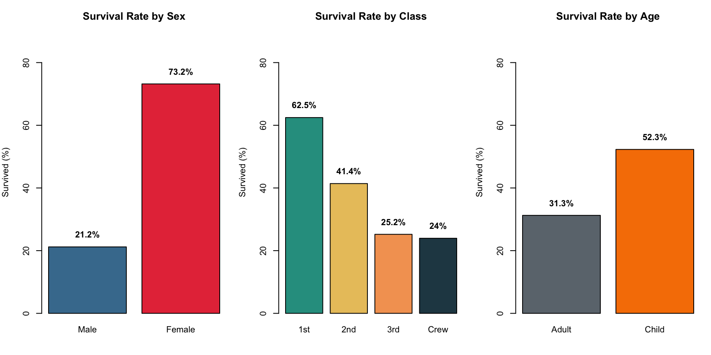
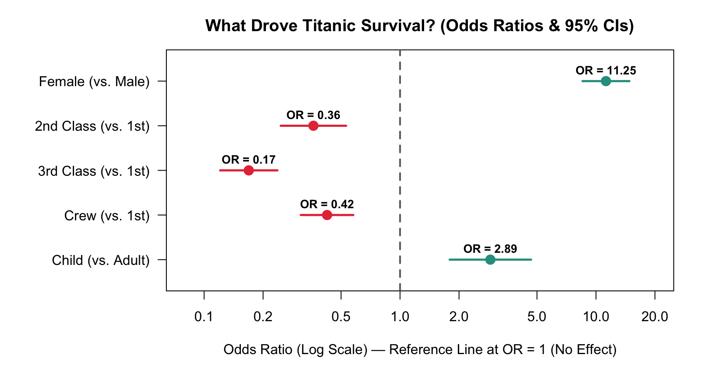

In business analytics, many of the most important questions do not have a continuous numerical answer—they have a Yes/No outcome:
- Will a customer buy or not buy after seeing an ad?
- Will a subscriber churn or stay next month?
- Will a loan applicant repay or default?
- Did a passenger on the Titanic survive or not survive?
When our outcome variable has only two possible categories (coded as 1 for “Yes” and 0 for “No”), standard linear regression is the wrong tool. Instead, we use Binary Logistic Regression.
In this tutorial, you will learn how binary logistic regression works without heavy mathematics, how to run it in R using the famous Titanic dataset, and—most importantly—how to read and interpret every part of R’s output.
1. Why Not Use Linear Regression?
In Linear Regression, we fit a straight line to predict a continuous number (like sales revenue or fuel efficiency). If we try to fit a straight line to a 0/1 Yes/No outcome, two problems happen:
- Impossible predictions: A straight line keeps going forever, so it can predict probabilities below
0%(like-15%) or above100%(like125%), which makes no sense for a probability. - Unequal effects: Going from a 10% to a 20% chance of buying is different from going from a 90% to a 100% chance, so relationships are naturally curved rather than flat straight lines.
Logistic regression solves this by bending the straight line into a smooth S-shaped curve (called the sigmoid or logistic curve). No matter what values your predictors have, the predicted probability always stays safely between 0 and 1 (0% and 100%).
2. Three Everyday Terms: Probability, Odds, and Log-Odds
Before looking at R output, there are just three connected ideas you need to understand. You do not need to memorize calculus—just how these three scales translate into each other:
Probability (\(p\)): The chance an event happens, from
0(0%) to1(100%).
Example: If 75 out of 100 customers renew their subscription, the probability is \(p = 0.75\) (or 75%).Odds: The ratio of “Yes” to “No”: \[\text{Odds} = \frac{p}{1 - p}\] Example: If \(p = 0.75\), then \(1 - p = 0.25\). The odds are \(\frac{0.75}{0.25} = 3\) (spoken as “3 to 1 odds”—you are 3 times as likely to renew as not renew).
- When \(p = 0.50\) (a 50/50 coin flip), \(\text{Odds} = 1\).
- When \(p > 0.50\), \(\text{Odds} > 1\).
- When \(p < 0.50\), \(\text{Odds} < 1\).
Log-Odds (Logit): The natural logarithm of the odds, \(\ln(\text{Odds})\).
R estimates the regression equation on the log-odds scale because log-odds can range smoothly from \(-\infty\) to \(+\infty\), allowing R to fit a simple linear combination of your predictors: \[\text{Log-Odds} = \beta_0 + \beta_1 X_1 + \beta_2 X_2 + \dots\]
| Probability (\(p\)) | Odds \(\left(\frac{p}{1 - p}\right)\) | Log-Odds \(\ln(\text{Odds})\) | Plain-English Meaning |
|---|---|---|---|
10% (0.10) |
0.11 |
-2.20 |
Very unlikely (“1 to 9 odds”) |
25% (0.25) |
0.33 |
-1.10 |
Unlikely (“1 to 3 odds”) |
50% (0.50) |
1.00 |
0.00 |
Even 50/50 chance (“1 to 1 odds”) |
75% (0.75) |
3.00 |
+1.10 |
Likely (“3 to 1 odds”) |
90% (0.90) |
9.00 |
+2.20 |
Very likely (“9 to 1 odds”) |
Practical Takeaway for Business Students:
R reports coefficients in log-odds (hard to read directly). One simple function—exp()—converts log-odds into Odds Ratios, andpredict(..., type = "response")converts them into Probabilities (0%–100%).
3. Loading and Preparing the Titanic Dataset in R
R includes the historical Titanic dataset built right into the base datasets package—no extra packages or downloads needed. It records the fate of 2,201 people aboard the RMS Titanic across four variables:
Survived: Outcome variable (NoorYes)Class: Ticket / crew status (1st,2nd,3rd,Crew)Sex: Gender (MaleorFemale)Age: Age group (AdultorChild)
By default, R stores Titanic as a summary frequency table (counts per combination). To run logistic regression, we expand it into a standard dataset where each row is one individual person.
# 1. Load R's built-in Titanic dataset
data("Titanic")
# Convert the 4-way table to a data frame of group counts
titanic_counts <- as.data.frame(Titanic)
head(titanic_counts) Class Sex Age Survived Freq
1 1st Male Child No 0
2 2nd Male Child No 0
3 3rd Male Child No 35
4 Crew Male Child No 0
5 1st Female Child No 0
6 2nd Female Child No 0Notice the Freq column: for example, row 3 says there were 35 male children in 3rd class who did not survive. Let’s expand those counts so each passenger gets their own row:
# 2. Expand counts into 2,201 individual passenger rows
titanic_df <- titanic_counts[rep(seq_len(nrow(titanic_counts)), titanic_counts$Freq), 1:4]
rownames(titanic_df) <- NULL
# 3. Explicitly set factor levels (the first level becomes the reference baseline)
titanic_df$Survived <- factor(titanic_df$Survived, levels = c("No", "Yes"))
titanic_df$Class <- factor(titanic_df$Class, levels = c("1st", "2nd", "3rd", "Crew"))
titanic_df$Sex <- factor(titanic_df$Sex, levels = c("Male", "Female"))
titanic_df$Age <- factor(titanic_df$Age, levels = c("Adult", "Child"))
# Inspect structure and first few rows
str(titanic_df)'data.frame': 2201 obs. of 4 variables:
$ Class : Factor w/ 4 levels "1st","2nd","3rd",..: 3 3 3 3 3 3 3 3 3 3 ...
$ Sex : Factor w/ 2 levels "Male","Female": 1 1 1 1 1 1 1 1 1 1 ...
$ Age : Factor w/ 2 levels "Adult","Child": 2 2 2 2 2 2 2 2 2 2 ...
$ Survived: Factor w/ 2 levels "No","Yes": 1 1 1 1 1 1 1 1 1 1 ...head(titanic_df) Class Sex Age Survived
1 3rd Male Child No
2 3rd Male Child No
3 3rd Male Child No
4 3rd Male Child No
5 3rd Male Child No
6 3rd Male Child NoUnderstanding the Factor Order (Very Important!)
In R’s glm() function for binary logistic regression:
- The first level of the outcome variable (
Survived = "No") is treated as failure (0), and the second level ("Yes") is treated as success (1). So our model predicts the probability of surviving (Yes). - For each predictor (
Sex,Class,Age), the first level becomes the reference (baseline) category. Here, our baseline passenger is an Adult Male in 1st Class. Every coefficient in the model will compare another group against this baseline.
4. Exploring the Data Before Modeling
Always explore cross-tabulations and survival rates before fitting a regression model. This gives you intuition and helps catch coding mistakes.
# Overall survival counts and percentages
table(titanic_df$Survived)
No Yes
1490 711 round(prop.table(table(titanic_df$Survived)) * 100, 1)
No Yes
67.7 32.3 Out of 2,201 people aboard, 1,490 (67.7%) did not survive and 711 (32.3%) survived.
Now let’s check survival rates broken down by Sex, Class, and Age:
# Survival rate (%) by Sex
round(prop.table(table(titanic_df$Sex, titanic_df$Survived), margin = 1) * 100, 1)
No Yes
Male 78.8 21.2
Female 26.8 73.2# Survival rate (%) by Class
round(prop.table(table(titanic_df$Class, titanic_df$Survived), margin = 1) * 100, 1)
No Yes
1st 37.5 62.5
2nd 58.6 41.4
3rd 74.8 25.2
Crew 76.0 24.0# Survival rate (%) by Age
round(prop.table(table(titanic_df$Age, titanic_df$Survived), margin = 1) * 100, 1)
No Yes
Adult 68.7 31.3
Child 47.7 52.3Let’s visualize these survival rates side by side:
surv_sex <- prop.table(table(titanic_df$Sex, titanic_df$Survived), margin = 1)[, "Yes"] * 100
surv_class <- prop.table(table(titanic_df$Class, titanic_df$Survived), margin = 1)[, "Yes"] * 100
surv_age <- prop.table(table(titanic_df$Age, titanic_df$Survived), margin = 1)[, "Yes"] * 100
par(mfrow = c(1, 3), mar = c(4, 4, 3, 1))
bp1 <- barplot(surv_sex, ylim = c(0, 90), col = c("#457B9D", "#E63946"),
main = "Survival Rate by Sex", ylab = "Survived (%)")
text(bp1, surv_sex + 4, labels = paste0(round(surv_sex, 1), "%"), font = 2)
bp2 <- barplot(surv_class, ylim = c(0, 90), col = c("#2A9D8F", "#E9C46A", "#F4A261", "#264653"),
main = "Survival Rate by Class", ylab = "Survived (%)")
text(bp2, surv_class + 4, labels = paste0(round(surv_class, 1), "%"), font = 2)
bp3 <- barplot(surv_age, ylim = c(0, 90), col = c("#6C757D", "#F77F00"),
main = "Survival Rate by Age", ylab = "Survived (%)")
text(bp3, surv_age + 4, labels = paste0(round(surv_age, 1), "%"), font = 2)
par(mfrow = c(1, 1))What Do These Exploratory Numbers Tell Us?
- Sex: 73.2% of females survived compared to only 21.2% of males—a huge gap reflecting the “women and children first” evacuation protocol.
- Class: 62.5% of 1st-class passengers survived, dropping to 41.4% in 2nd class, 25.2% in 3rd class, and 24.0% among the crew.
- Age: 52.3% of children survived compared to 31.3% of adults.
Cross-tables look at one variable at a time. Logistic regression lets us analyze all three factors simultaneously so we can separate their individual effects.
5. Simple Logistic Regression (One Predictor)
Let’s start small by predicting Survived using only Sex. In R, we use glm() (Generalized Linear Model) and set family = binomial to specify binary logistic regression.
model_simple <- glm(Survived ~ Sex, data = titanic_df, family = binomial)
summary(model_simple)
Call:
glm(formula = Survived ~ Sex, family = binomial, data = titanic_df)
Coefficients:
Estimate Std. Error z value Pr(>|z|)
(Intercept) -1.3128 0.0588 -22.32 <2e-16 ***
SexFemale 2.3172 0.1196 19.38 <2e-16 ***
---
Signif. codes: 0 '***' 0.001 '**' 0.01 '*' 0.05 '.' 0.1 ' ' 1
(Dispersion parameter for binomial family taken to be 1)
Null deviance: 2769.5 on 2200 degrees of freedom
Residual deviance: 2335.0 on 2199 degrees of freedom
AIC: 2339
Number of Fisher Scoring iterations: 4Let’s also convert the coefficients into Odds Ratios using exp():
round(exp(coef(model_simple)), 3)(Intercept) SexFemale
0.269 10.147 Interpreting the Simple Model Output
(Intercept) = -1.3128(p < 2e-16):
This is the predicted log-odds of survival for the reference group (Males). Because-1.3128is negative, a male’s probability of survival is below 50%. Converting to odds:exp(-1.3128) = 0.269, meaning for every 1 male who survived, nearly 4 did not (0.269 / (1 + 0.269) = 21.2%, matching our table above!).SexFemale = +2.3172(p < 2e-16):
Being female increases the log-odds of survival by +2.3172 compared to being male.
Converting to an Odds Ratio:exp(2.3172) = 10.147. This means females had about 10.15 times the odds of surviving compared to males.Deviance & AIC:
Null deviance = 2769.5(how much error remains if we guess using only the overall average).Residual deviance = 2335.0(how much error remains after addingSex). Adding justSexreduced deviance by434.5points!AIC = 2339: A benchmark score we will compare against our fuller model next.
6. Multiple Logistic Regression (Adding Class and Age)
In real-world business problems, predictors can be correlated with one another (for instance, crew members were mostly adult males, while 1st class had a higher proportion of women). To measure the effect of each variable while holding the others constant, we include Sex, Class, and Age together:
model_full <- glm(Survived ~ Sex + Class + Age, data = titanic_df, family = binomial)
summary(model_full)
Call:
glm(formula = Survived ~ Sex + Class + Age, family = binomial,
data = titanic_df)
Coefficients:
Estimate Std. Error z value Pr(>|z|)
(Intercept) -0.3762 0.1362 -2.763 0.00573 **
SexFemale 2.4201 0.1404 17.236 < 2e-16 ***
Class2nd -1.0181 0.1960 -5.194 2.05e-07 ***
Class3rd -1.7778 0.1716 -10.362 < 2e-16 ***
ClassCrew -0.8577 0.1573 -5.451 5.00e-08 ***
AgeChild 1.0615 0.2440 4.350 1.36e-05 ***
---
Signif. codes: 0 '***' 0.001 '**' 0.01 '*' 0.05 '.' 0.1 ' ' 1
(Dispersion parameter for binomial family taken to be 1)
Null deviance: 2769.5 on 2200 degrees of freedom
Residual deviance: 2210.1 on 2195 degrees of freedom
AIC: 2222.1
Number of Fisher Scoring iterations: 4This summary() output is the heart of logistic regression in R. Let’s break down every single section in detail.
6.1 Detailed Interpretation of the R Output
A. The Call Section
glm(formula = Survived ~ Sex + Class + Age, family = binomial, data = titanic_df)This confirms the exact model R ran: Survived is predicted by Sex, Class, and Age using a binary logistic (binomial) model on titanic_df.
B. The Coefficients Table (Column by Column)
Before reading any row, identify the baseline (reference) group—the categories that do not appear in the table: - Sex: Male - Class: 1st - Age: Adult
So (Intercept) represents an Adult Male in 1st Class.
Each column in the Coefficients table answers a specific question:
| Column | What It Means in Plain English |
|---|---|
Estimate |
The change in log-odds of survival compared to the reference group, holding all other predictors constant. A positive (+) number means higher chance of survival; a negative (-) number means lower chance of survival. |
Std. Error |
How much uncertainty (sampling noise) surrounds the estimate. Smaller values mean more precise estimates. |
z value |
Estimate / Std. Error. Measures how many standard errors the estimate sits away from zero (no effect). Larger absolute values (far from 0) mean stronger evidence. |
Pr(>|z|) |
The \(p\)-value. If p < 0.05, the variable has a statistically significant relationship with survival (not just random luck). The stars (***) give a quick visual cue (*** means p < 0.001). |
Now let’s read each row of the Coefficients table:
(Intercept) = -0.3762(SE = 0.1362,z = -2.763,p = 0.00573 **)
This is the baseline log-odds of survival for an Adult Male in 1st Class. Because it is negative (-0.3762), his survival probability is slightly under 50% (specifically, about 40.7%).SexFemale = +2.4201(SE = 0.1404,z = 17.236,p < 2e-16 ***)
HoldingClassandAgeconstant, being Female increases the log-odds of survival by +2.4201 compared to being Male. Withp < 0.001(***), sex is an overwhelmingly significant predictor of survival.Class2nd = -1.0181(SE = 0.1960,z = -5.194,p = 2.05e-07 ***)
HoldingSexandAgeconstant, 2nd-class passengers have 1.0181 lower log-odds of survival than 1st-class passengers (p < 0.001).Class3rd = -1.7778(SE = 0.1716,z = -10.362,p < 2e-16 ***)
HoldingSexandAgeconstant, 3rd-class passengers have 1.7778 lower log-odds of survival than 1st-class passengers (p < 0.001). Notice this drop (-1.78) is much steeper than 2nd class (-1.02).ClassCrew = -0.8577(SE = 0.1573,z = -5.451,p = 5.00e-08 ***)
HoldingSexandAgeconstant, Crew members have 0.8577 lower log-odds of survival than 1st-class passengers (p < 0.001). Interestingly, once you control for the fact that the crew was mostly adult males, crew members actually had slightly better survival odds than 3rd-class passengers!AgeChild = +1.0615(SE = 0.2440,z = 4.350,p = 1.36e-05 ***)
HoldingSexandClassconstant, being a Child increases the log-odds of survival by +1.0615 compared to being an Adult (p < 0.001).
6.2 Converting to Odds Ratios (How Business Analysts Report Results)
Log-odds like +2.4201 or -1.7778 are great for statistical testing, but no manager wants to hear about “log-odds.” Instead, we exponentiate the coefficients (exp()) to get Odds Ratios (OR) along with their 95% Confidence Intervals:
# Compute Odds Ratios and 95% Confidence Intervals
or_table <- exp(cbind(Odds_Ratio = coef(model_full), confint.default(model_full)))
round(or_table, 3) Odds_Ratio 2.5 % 97.5 %
(Intercept) 0.686 0.526 0.896
SexFemale 11.247 8.541 14.809
Class2nd 0.361 0.246 0.530
Class3rd 0.169 0.121 0.237
ClassCrew 0.424 0.312 0.577
AgeChild 2.891 1.792 4.664How to Read Every Odds Ratio
The magic benchmark for an Odds Ratio is 1.0: - OR = 1: No effect (same odds as the baseline group). - OR > 1: Increases the odds of survival. - OR < 1: Decreases the odds of survival. To express this as a percentage drop, compute (1 - OR) × 100%. - 95% Confidence Interval (2.5 % to 97.5 %): If the interval does not include 1.0, the effect is statistically significant at the 5% level.
Let’s interpret every row in plain English:
SexFemale(OR = 11.247,95% CI: 8.541 – 14.809):
Holding passenger class and age constant, females had 11.25 times higher odds of surviving than males. Even at the low end of the 95% confidence interval, females had over 8.5 times the odds of males.AgeChild(OR = 2.891,95% CI: 1.792 – 4.664):
Holding sex and class constant, children had 2.89 times higher odds (nearly 3× the odds) of surviving than adults.Class2nd(OR = 0.361,95% CI: 0.246 – 0.530):
Holding sex and age constant, 2nd-class passengers had0.361times the odds of 1st-class passengers—meaning 63.9% lower odds of survival (1 - 0.361 = 0.639) compared to 1st class.Class3rd(OR = 0.169,95% CI: 0.121 – 0.237):
Holding sex and age constant, 3rd-class passengers had 83.1% lower odds of survival (1 - 0.169 = 0.831) compared to 1st class. Put another way, a 1st-class passenger had about1 / 0.169 ≈ 5.9times the odds of surviving compared to a 3rd-class passenger of the same sex and age!ClassCrew(OR = 0.424,95% CI: 0.312 – 0.577):
Holding sex and age constant, crew members had 57.6% lower odds of survival (1 - 0.424 = 0.576) compared to 1st-class passengers.(Intercept)(OR = 0.686,95% CI: 0.526 – 0.896):
For the baseline passenger (Adult Male in 1st Class), the survival odds were0.686to1(which translates to a40.7%survival probability).
Let’s visualize these Odds Ratios in a clean horizontal Odds Ratio Plot:
# Exclude the intercept for plotting predictor effects
or_plot <- or_table[-1, ]
labels_clean <- c("Female (vs. Male)",
"2nd Class (vs. 1st)",
"3rd Class (vs. 1st)",
"Crew (vs. 1st)",
"Child (vs. Adult)")
par(mar = c(5, 10, 3, 2))
y_pos <- rev(seq_len(nrow(or_plot)))
plot(or_plot[, "Odds_Ratio"], y_pos,
log = "x",
xlim = c(0.08, 20),
ylim = c(0.5, nrow(or_plot) + 0.5),
yaxt = "n",
pch = 19, cex = 1.5,
col = ifelse(or_plot[, "Odds_Ratio"] > 1, "#2A9D8F", "#E63946"),
xlab = "Odds Ratio (Log Scale) — Reference Line at OR = 1 (No Effect)",
ylab = "",
main = "What Drove Titanic Survival? (Odds Ratios & 95% CIs)")
axis(2, at = y_pos, labels = labels_clean, las = 1)
abline(v = 1, lty = 2, lwd = 2, col = "gray40")
segments(x0 = or_plot[, "2.5 %"], y0 = y_pos,
x1 = or_plot[, "97.5 %"], y1 = y_pos,
lwd = 2.5,
col = ifelse(or_plot[, "Odds_Ratio"] > 1, "#2A9D8F", "#E63946"))
text(or_plot[, "Odds_Ratio"], y_pos + 0.25,
labels = paste0("OR = ", round(or_plot[, "Odds_Ratio"], 2)),
cex = 0.85, font = 2)
par(mar = c(5, 4, 4, 2) + 0.1)6.3 Model Fit: Deviance, Pseudo-\(R^2\), and AIC
In linear regression, we check \(R^2\) to see how well the model fits. Logistic regression does not have an exact \(R^2\), so R reports Deviance and AIC instead:
Null Deviance (
2769.5on2200df):
Measures how much unexplained variation exists in a “empty” model with no predictors (just guessing the overall 32.3% survival rate for everyone).Residual Deviance (
2210.1on2195df):
Measures the unexplained variation after addingSex,Class, andAge. It dropped by559.4points (2769.5 - 2210.1), showing our predictors explain a substantial share of who survived.McFadden’s Pseudo-\(R^2\):
Just like \(R^2\), we can compute the percentage reduction in deviance: \[\text{Pseudo-}R^2 = 1 - \frac{\text{Residual Deviance}}{\text{Null Deviance}}\]AIC (
2222.1vs.2339.0):
Akaike Information Criterion (AIC) lets us compare competing models while penalizing unnecessary complexity. Lower AIC is better.
Let’s verify both Pseudo-\(R^2\) and whether adding Class and Age significantly improved our simple Sex-only model:
# McFadden's Pseudo-R2
pseudo_r2 <- 1 - (model_full$deviance / model_full$null.deviance)
cat("McFadden's Pseudo-R2:", round(pseudo_r2, 4), "\n")McFadden's Pseudo-R2: 0.202 # Compare AIC of Simple vs Full model
AIC(model_simple, model_full) df AIC
model_simple 2 2338.988
model_full 6 2222.061# Likelihood Ratio Test comparing Simple vs Full model
anova(model_simple, model_full, test = "Chisq")Analysis of Deviance Table
Model 1: Survived ~ Sex
Model 2: Survived ~ Sex + Class + Age
Resid. Df Resid. Dev Df Deviance Pr(>Chi)
1 2199 2335.0
2 2195 2210.1 4 124.93 < 2.2e-16 ***
---
Signif. codes: 0 '***' 0.001 '**' 0.01 '*' 0.05 '.' 0.1 ' ' 1Interpreting the Model Comparison Output
- McFadden’s Pseudo-\(R^2 = 0.202\) (20.2%):
Unlike linear regression \(R^2\), logistic regression Pseudo-\(R^2\) values tend to be lower. In applied business and social science research, a McFadden’s Pseudo-\(R^2\) between 0.20 and 0.40 indicates a very good model fit. - AIC dropped from
2339.0to2222.1:
A massive decrease of116.9points confirms thatClassandAgeadd real predictive power beyondSexalone. anova(..., test = "Chisq")(Deviance = 124.93,p < 2.2e-16 ***):
The Chi-square test confirms that addingClassandAgeleads to a statistically significant improvement in model fit.
7. Making Predictions for Individual Passengers
In practice, business teams use logistic regression to score new observations—for example, predicting a specific customer’s probability of churning or a specific passenger’s survival probability.
In R, we use predict(..., type = "response"). Always include type = "response" so R returns probabilities between 0 and 1 instead of raw log-odds.
# Create 5 realistic passenger profiles
new_passengers <- data.frame(
Profile = c("1st Class Female Child",
"2nd Class Female Adult",
"1st Class Male Adult (Baseline)",
"Adult Male Crew Member",
"3rd Class Male Adult"),
Sex = factor(c("Female", "Female", "Male", "Male", "Male"),
levels = c("Male", "Female")),
Class = factor(c("1st", "2nd", "1st", "Crew", "3rd"),
levels = c("1st", "2nd", "3rd", "Crew")),
Age = factor(c("Child", "Adult", "Adult", "Adult", "Adult"),
levels = c("Adult", "Child"))
)
# Predict survival probability
new_passengers$Predicted_Probability <- round(
predict(model_full, newdata = new_passengers, type = "response"), 3
)
new_passengers$Survival_Percent <- paste0(new_passengers$Predicted_Probability * 100, "%")
new_passengers Profile Sex Class Age Predicted_Probability
1 1st Class Female Child Female 1st Child 0.957
2 2nd Class Female Adult Female 2nd Adult 0.736
3 1st Class Male Adult (Baseline) Male 1st Adult 0.407
4 Adult Male Crew Member Male Crew Adult 0.225
5 3rd Class Male Adult Male 3rd Adult 0.104
Survival_Percent
1 95.7%
2 73.6%
3 40.7%
4 22.5%
5 10.4%Interpreting the Predicted Probabilities
Look how intuitive this is for decision-makers:
- 1st Class Female Child (
95.7%): Almost guaranteed survival—she had every advantage (Female,1st Class, andChild). - 2nd Class Female Adult (
73.6%): High survival probability, mainly driven by being female, though lower than a 1st-class female. - 1st Class Male Adult (
40.7%): Notice this is our reference group ((Intercept)). Even in 1st class, being an adult male kept his survival probability below 50%. - Adult Male Crew Member (
22.5%): Roughly a 1-in-4.5 chance of surviving. - 3rd Class Male Adult (
10.4%): Only about a 1-in-10 chance of surviving.
8. Evaluating Model Accuracy: The Confusion Matrix
Finally, how well does our model classify all 2,201 passengers into Survived (Yes) vs. Did Not Survive (No)?
To turn predicted probabilities into binary Yes/No predictions, we pick a decision threshold (cutoff)—typically 0.50 (50%): - If predicted probability \(\ge 0.50\), predict Yes (Survived). - If predicted probability \(< 0.50\), predict No (Did Not Survive).
# Predicted probability for every passenger in the dataset
pred_prob <- predict(model_full, type = "response")
# Classify using a 0.50 probability cutoff
pred_class <- factor(ifelse(pred_prob >= 0.50, "Yes", "No"), levels = c("No", "Yes"))
# Confusion Matrix
cm <- table(Predicted = pred_class, Actual = titanic_df$Survived)
cm Actual
Predicted No Yes
No 1364 362
Yes 126 349Let’s compute the three standard classification metrics from this matrix:
accuracy <- sum(diag(cm)) / sum(cm)
sensitivity <- cm["Yes", "Yes"] / sum(cm[, "Yes"]) # True Positive Rate (Recall)
specificity <- cm["No", "No"] / sum(cm[, "No"]) # True Negative Rate
cat("Accuracy :", round(accuracy * 100, 1), "%\n")Accuracy : 77.8 %cat("Sensitivity:", round(sensitivity * 100, 1), "%\n")Sensitivity: 49.1 %cat("Specificity:", round(specificity * 100, 1), "%\n")Specificity: 91.5 %Interpreting the Confusion Matrix & Metrics
Let’s read each cell of the table: - True Negatives (1,364): Passengers who did not survive, and the model correctly predicted No. - True Positives (349): Passengers who survived, and the model correctly predicted Yes. - False Positives (126): Passengers who did not survive, but the model wrongly predicted Yes. - False Negatives (362): Passengers who survived, but the model wrongly predicted No.
And what do the three metrics tell us? - Overall Accuracy (77.8%): The model correctly classifies nearly 4 out of 5 passengers using just three simple variables (Sex, Class, Age). - Specificity (91.5%): Among passengers who did not survive, the model correctly identified 91.5% of them. - Sensitivity (49.1%): Among passengers who actually survived, the model caught 49.1% of them using the 0.50 cutoff.
Business Insight on Thresholds:
Why was Sensitivity 49.1% while Specificity was 91.5%? Because overall survival on the Titanic was only32.3%, many survivors (such as 1st-class adult males with a40.7%predicted probability) fell just below the strict0.50cutoff.
In business applications—like fraud detection or customer churn prevention—missing a positive case (False Negative) is often much more costly than a false alarm. In those cases, analysts simply lower the cutoff (for example, from0.50to0.35) to catch more true positives!
Let’s quickly see how lowering the cutoff to 0.35 changes Sensitivity and Specificity:
pred_class_35 <- factor(ifelse(pred_prob >= 0.35, "Yes", "No"), levels = c("No", "Yes"))
cm_35 <- table(Predicted = pred_class_35, Actual = titanic_df$Survived)
cat("Cutoff = 0.35 -> Accuracy:", round(sum(diag(cm_35)) / sum(cm_35) * 100, 1), "%",
"| Sensitivity:", round(cm_35["Yes", "Yes"] / sum(cm_35[, "Yes"]) * 100, 1), "%",
"| Specificity:", round(cm_35["No", "No"] / sum(cm_35[, "No"]) * 100, 1), "%\n")Cutoff = 0.35 -> Accuracy: 75.6 % | Sensitivity: 58.6 % | Specificity: 83.6 %Look at that trade-off: lowering the cutoff from 0.50 to 0.35 jumps Sensitivity from 49.1% to 58.6% (catching 68 more survivors), while Specificity shifts from 91.5% to 83.6%, and overall Accuracy moves slightly from 77.8% to 75.6%. Choosing the right cutoff is always a business decision, not just a statistical one.
9. Quick Reference: How to Read R’s glm() Output
| Output Item | Where to Find It | Quick Rule of Thumb |
|---|---|---|
| Direction of Effect | Estimate column |
+ increases probability of 1 (Yes); - decreases it. |
| Statistical Significance | Pr(>|z|) column |
If < 0.05 (marked with *, **, or ***), the predictor matters. |
| Odds Ratio (OR) | exp(coef(model)) |
OR > 1 = higher odds; OR < 1 = lower odds; OR = 1 = no effect. |
| 95% Confidence Interval | exp(confint.default(model)) |
If the interval excludes 1.0, the effect is statistically significant. |
| Model Improvement | Null vs. Residual deviance |
Big drop = predictors explain real patterns; 1 - Residual/Null = Pseudo-\(R^2\). |
| Model Comparison | AIC |
Lower AIC = better balance between accuracy and simplicity. |
| Predicted Probability | predict(model, type = "response") |
Gives intuitive 0 to 1 (0% to 100%) probabilities for new cases. |
Practice datasets
Logistic regression targets categorical outcomes, most commonly binary classification (e.g., yes/no, default/pass).
- Titanic: The classic benchmark dataset for binary logistic regression, demonstrating missing value imputation, interaction terms, and odds ratios.
- Target Variable: Survival status (1 = Survived, 0 = Died).
- Features: Passenger class, age, sex, fare, number of siblings/spouses aboard.
- Pima Indians Diabetes Dataset: Standard baseline for medical diagnostic classification; ideal for visualizing confusion matrices, ROC-AUC curves, and decision thresholds.
- Target Variable: Diabetes diagnosis (1 = Positive, 0 = Negative).
- Features: Glucose level, blood pressure, BMI, insulin level, age, family pedigree.
- Bank Marketing Dataset (UCI Repository): Perfect for handling class imbalance (far more “no” responses than “yes”) and evaluating precision-recall trade-offs.
- Target Variable: Term deposit subscription (yes / no).
- Features: Customer age, job type, balance, campaign call duration, previous contact outcomes.
- Fraud Detection Dataset: Highlights severe class imbalance and teaches decision boundary tuning and metric selection (F1-Score over raw Accuracy).
- Target Variable: Fraudulent transaction (1 = Fraud, 0 = Legitimate).
- Features: Transaction amount, time, and PCA-transformed features (\(V_1\) through \(V_{28}\)).